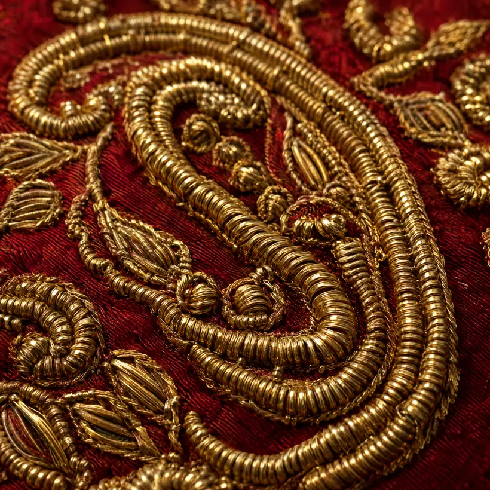
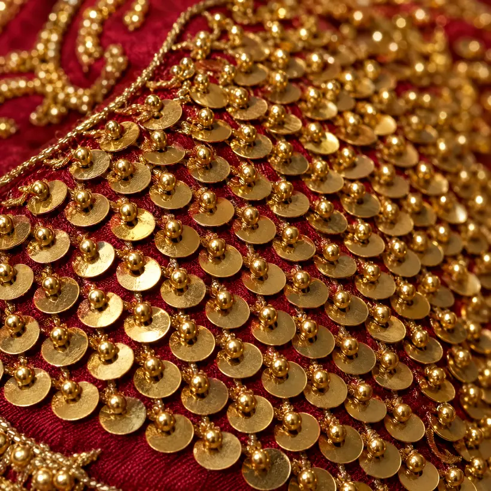
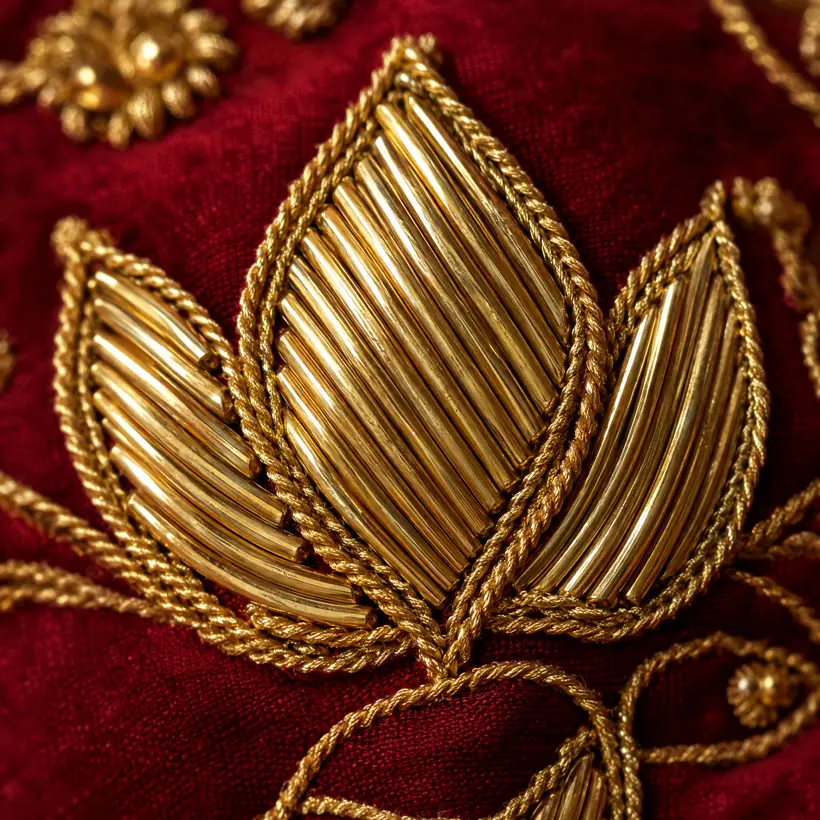
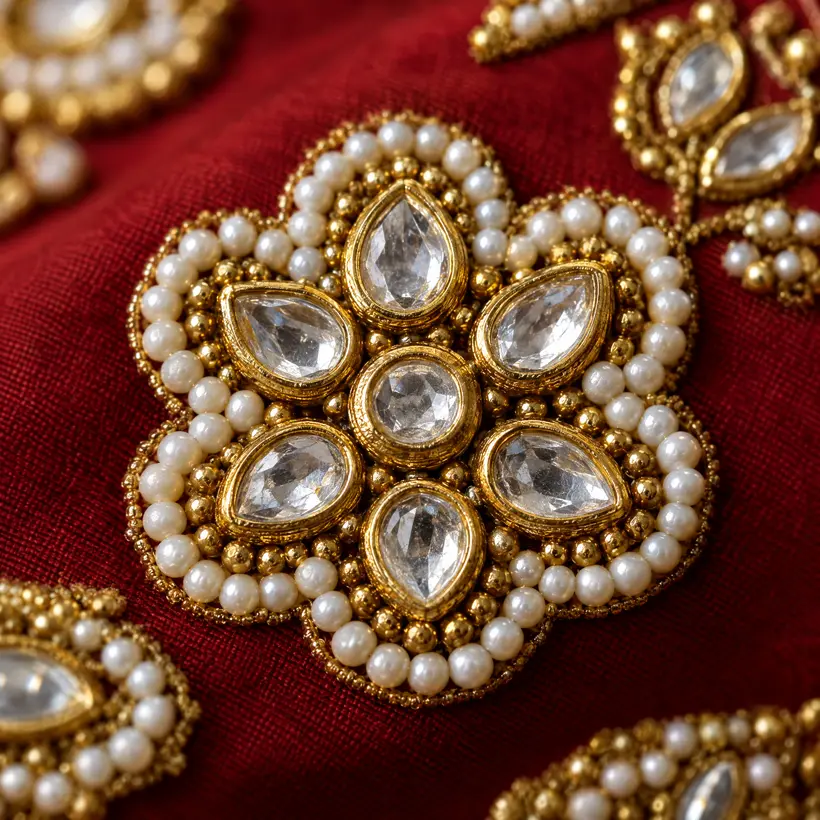
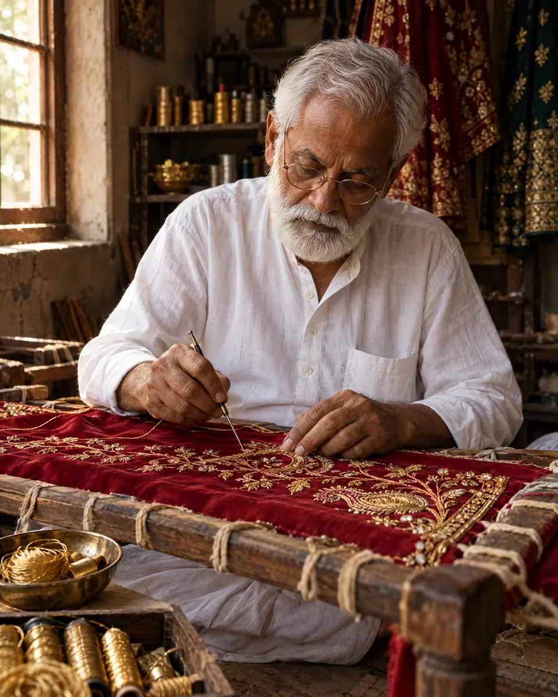
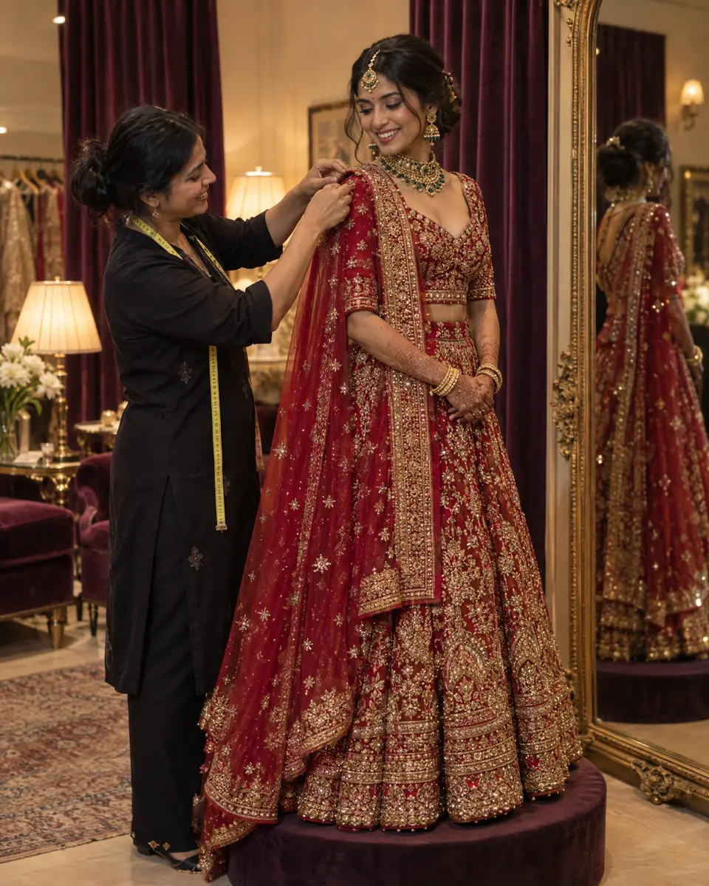
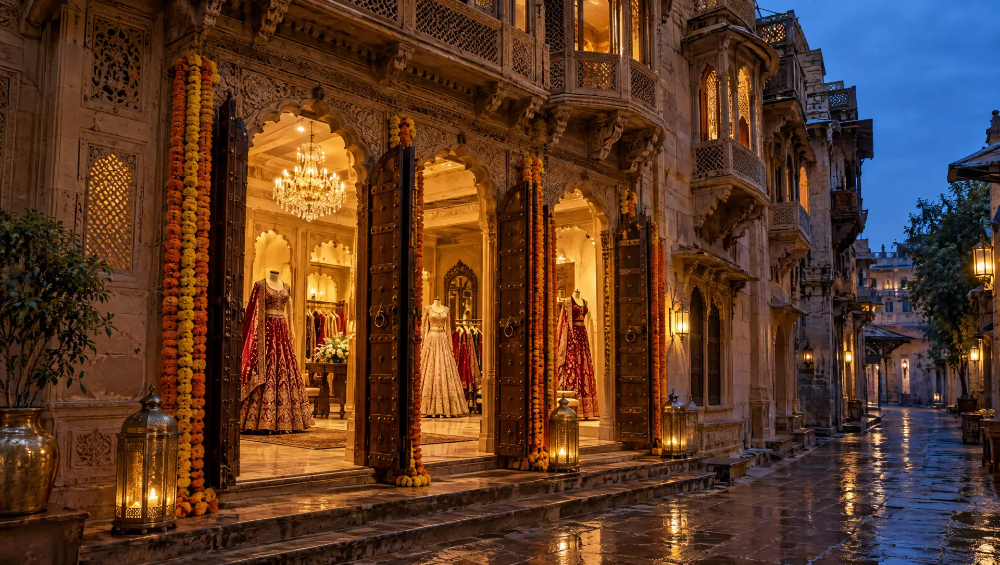

दबका
Dabka
A fine gold wire wound into a tight spring, cut and couched in curls. It gives the raised, rope-like outline you can feel with a fingertip.
Used for paisley outlines and vines
Hand zardozi bridal couture since 1971
Scroll to watch one lehenga go from chalk to gold
Forty-one karigars sit at our addas. No machine ever touches the gold. One bride’s lehenga takes three months, and every stitch can be traced back to a pair of hands.
Zardozi is not one stitch. Our karigars move between four techniques on a single kali. Tap one to see it up close.

दबका
A fine gold wire wound into a tight spring, cut and couched in curls. It gives the raised, rope-like outline you can feel with a fingertip.
Used for paisley outlines and vines

सितारा
Flat gold sequins laid like fish scales, each held with a tiny bead. They catch light from every angle as the bride walks.
Used for fills and the hem border

सलमा
Smooth, hollow gold tubes cut to length and laid side by side to fill a petal, then outlined with twisted nakshi thread.
Used for lotus petals and leaves

कुंदन
Flat-cut glass stones in gold settings, ringed with seed pearls. Placed last, so the centre of every medallion has a jewel.
Used for medallion centres
Four lehengas, each made once in this exact form and then remade to your measure. The gold bar under each piece shows its hours of handwork.

“The chalk tells you where to go. The gold tells you if you were honest.”
Rafiq learned zardozi from his father at eleven. Today he draws every khaka we use and trains the eight apprentices who join us each year. When your lehenga is finished, he signs the inside of the waistband in gold thread.
Plan for fourteen weeks. Here is what happens in each of them.
Week 0
Ninety minutes in the haveli. We try on silhouettes, talk colours and take 26 measurements.
Weeks 1–2
Rafiq draws your motif on paper. You approve the sketch, the silk swatch and the gold tone.
Weeks 6, 10, 13
A toile, then the embroidered kalis, then the finished lehenga with dupatta and latkans.
Week 14
Steamed, wrapped in muslin and boxed in our trunk, with Rafiq’s signature in the waistband.

Consultations are free and last ninety minutes. Bring your mother, your sister, or nobody at all.

Haveli No. 7, Zari Gali, Old City